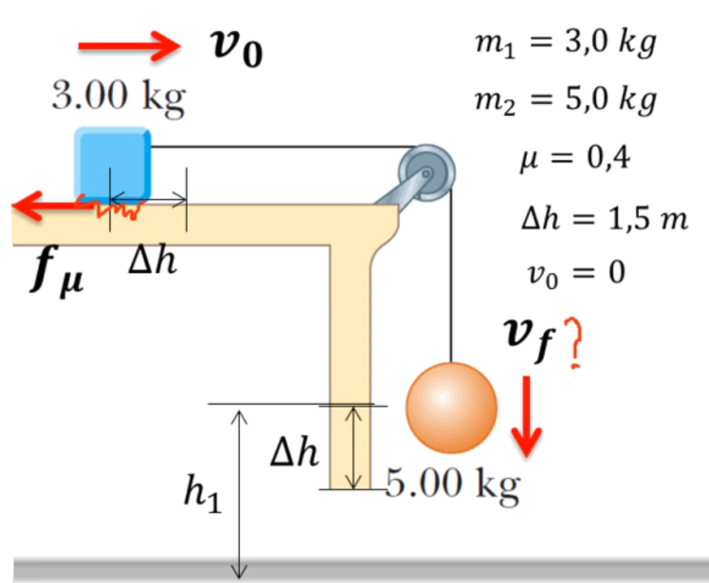
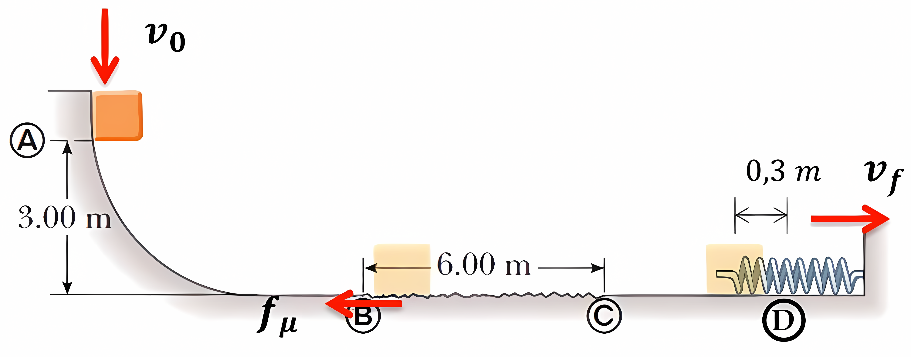
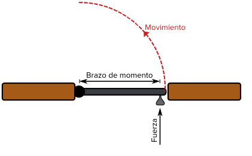
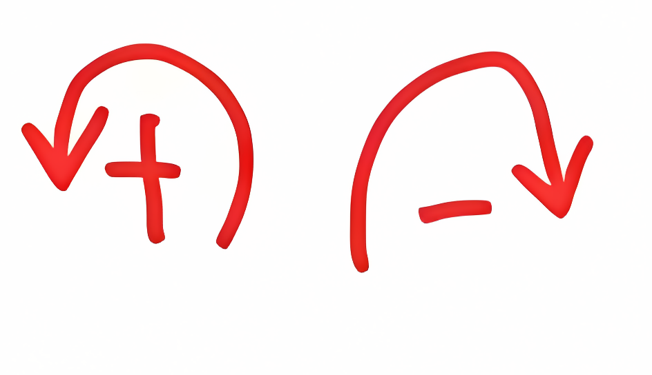
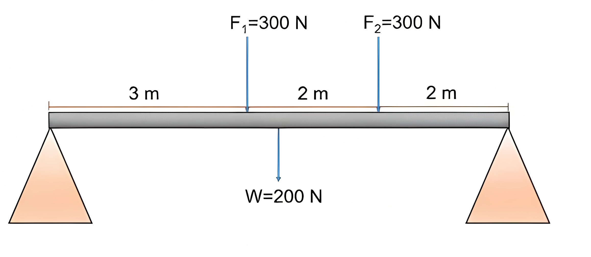
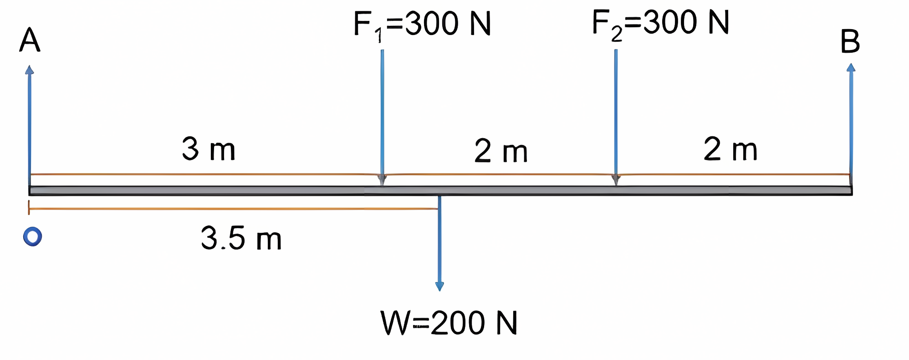
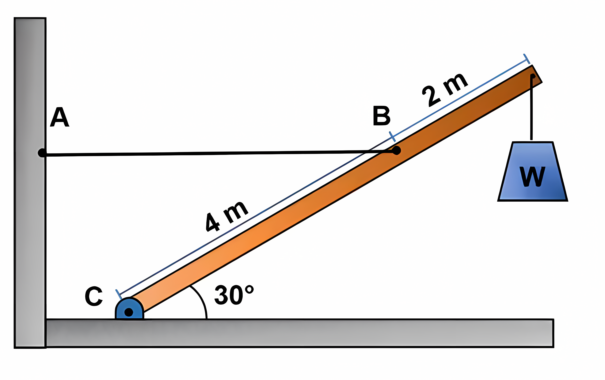
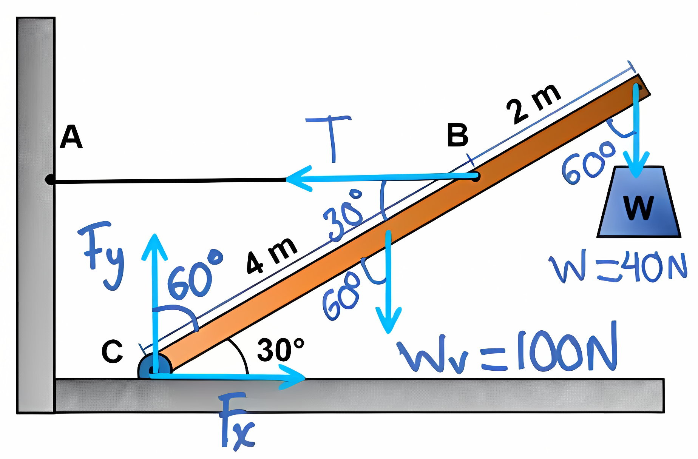
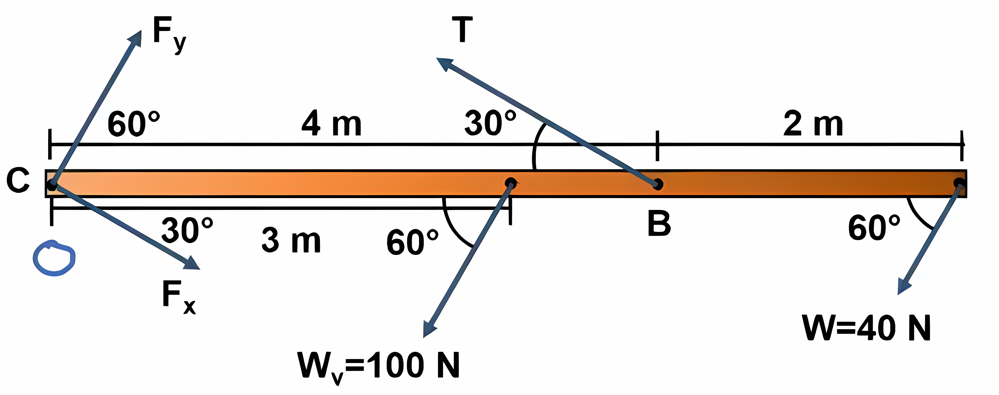

Repaso Evaluación 3
Ejercicio 1
En el sistema se tienen dos masas unidas por una cuerda como se muestra en la figura, \(m_1 = 3\, kg\) y \(m_2 = 5 \, kg\), el bloque m, tiene un coeficiente de fricción entre la masa y el piso de \(0.4\). El sistema parte del reposo. ¿Cuál es la rapidez de la masa \(m_2\) después de caer \(1.5 \,m\)?

En este ejercicio hay fricción por lo que la energía NO se conserva. La velocidad de la masa \(m_2\) se puede calcular usando la segunda ley de Newton, pero también se puede usar la no conservación de la energía.
Sabemos que \(\Delta E_{mec} = E_f - E_i = W_{fric}\), por lo tanto \(-f_r d = E_f - E_i\).
Al inicio la masa está en reposo, pero tiene una cierta altura, por lo que la energía inicial es potencial gravitacional, \[E_i = m_2 g h\] donde \(h = 1.5 \, m\).
Nos conviene tomar la posición final como altura cero, por lo que la energía final de la masa es solo la cinética, es decir \[E_f = \frac{1}{2} m_2 v^2\].
Entonces, utilizando la no conservación de la energía, tenemos que: \[-f_r d = \frac{1}{2} m_2 v^2 - m_2 g h\]
Pero hay un detalle, las masas están unidas por una cuerda, por lo que tenemos que considerarlas dentro de la misma ecuación. \[-f_r d = \frac{1}{2} m_1 v^2 + \frac{1}{2} m_2 v^2 + m_1 g h - (m_2 g h + m_1 g h)\] La masa \(m_1\) tiene una altura inicial que no cambia, por lo que los terminos se cancelan: \[-f_r d = \frac{1}{2} m_1 v^2+ \frac{1}{2} m_2 v^2 - m_2 g h \] \[-f_r d = \frac{1}{2} v^2 (m_1 + m_2) - m_2 g h\]
\[- \mu_k m_1 g d = \frac{1}{2} v^2 (m_1 + m_2) - m_2 g h\] Despejando la velocidad: \[v = \sqrt{\frac{-2 \mu_k m_1 g d + 2 m_2 g h}{m_1 + m_2}}\] \(d\) es la distancia recorrida por la masa \(m_2\), que en este caso es \(1.5 \, m\), por lo que podemos escribirlo como \(h\): \[v = \sqrt{\frac{-2 \mu_k m_1 g h + 2 m_2 g h}{m_1 + m_2}}\]
Factorizando: \[v = \sqrt{\frac{2 g h (m_2 - \mu_k m_1)}{m_1 + m_2}}\] Reemplazando: \[v = \sqrt{\frac{2 \cdot 9.81 \cdot 1.5 (5 - 0.4 \cdot 3)}{3 + 5}}\] \[v = 3.74 \, m/s\]
Ejercicio 2
Un bloque de 10 kg se libera desde lo alto de 3 m sobre una rampa (punto A), la pista no tiene fricción excepto por un tramo de 6 m (tramo BC), al finalizar el recorrido el bloque golpea un resorte cuya constante es 2250 N/m y lo comprime 0,30 m desde su posición de equilibrio antes de llegar al reposo momentáneo. Determinar el coeficiente de fricción cinético entre el bloque y la superficie con fricción BC.

Para empezar, nos podemos dar cuenta que la energía mecánica se conserva en el tramo AB, por lo que podemos calcular la velocidad al llegar al punto B: \[\Delta E_{mec} = E_f - E_i = 0\] \[mgh = \frac{1}{2} mv^2\] Despejando la velocidad: \[v = \sqrt{2gh}\] \[ v = \sqrt{2 \cdot 9.81 \cdot 3}\] \[ v = 7.67 \, m/s\]
Ahora, al llegar al tramo BC, la energía no se conserva debido a la fricción, por lo que podemos escribir: \[\Delta E_{mec} = E_f - E_i = W_{fric}\] Si establecemos el punto final como C, y el punto inicial como B, tenemos que: \[-f_r d = E_f - E_i\] \[-f_r d = \frac{1}{2} mv_c^2 - \frac{1}{2} mv_b^2\] Dado que la superficie es horizontal, la fuerza de fricción es: \[f_r = \mu_k N = \mu_k mg\] Por lo que podemos escribir: \[-\mu_k mg d = \frac{1}{2} mv_c^2 - \frac{1}{2} mv_b^2\]
Dividiendo ambos lados por \(m\): \[-\mu_k g d = \frac{1}{2} v_c^2 - \frac{1}{2} v_b^2\] Despejando el coeficiente de fricción: \[\mu_k = -\frac{v_c^2 - v_b^2}{2 g d}\] Pero, necesitamos la velocidad al llegar al punto C, que es cuando el resorte está comprimido. La energía del resorte es: \[E_{resorte} = \frac{1}{2} k x^2\]
Y, dado que en ese punto no hay pérdida de energía, podemos escribir: \[\Delta E_{mec} = \frac{k x^2}{2}- \frac{1}{2} mv_c^2=0\] Igualando y simplificando: \[k x^2 = mv_c^2\] Despejando la velocidad al llegar al punto C: \[v_c = \sqrt{\frac{k x^2}{m}}\] Reemplazando (ya que tenemos todos los valores): \[v_c = \sqrt{\frac{2250 \cdot 0.3^2}{10}} = 4.5 \, m/s\]
Ahora, reemplazamos en la ecuación del coeficiente de fricción: \[\mu_k = -\frac{v_c^2 - v_b^2}{2 g d}\] \[\mu_k = -\frac{4.5^2 - 7.67^2}{2 \cdot 9.81 \cdot 6}\] \[\mu_k = -(-0.33)\] \[\mu_k = 0.33\]
Torque
Es una medida de la fuerza que puede hacer que un objeto gire alrededor de un eje. Así como en la cinemática lineal la fuerza es lo que hace que un objeto acelere, el torque es lo que provoca que un objeto adquiera aceleración angular. Es una cantidad vectorial. La dirección del vector de el torque depende de la dirección de la fuerza en el eje.

Formula de Torque
El torque se define como el producto vectorial entre el vector de posición y la fuerza aplicada: \[\tau = \vec{r} \times \vec{F}\] Donde \(\vec{r}\) es el vector de posición desde el eje de rotación hasta el punto donde se aplica la fuerza, y \(\vec{F}\) es la fuerza aplicada. La magnitud del torque se puede calcular como: \[\tau = r F \sin(\theta)\]
Equilibrio Rotacional
Un cuerpo se encuentra en equilibrio rotacional si la suma de todos los torques que actúan sobre él es cero: \[\sum \tau = 0\] Puesto que la rotación no ocurre respecto a ningún punto, podemos elegir cualquier punto como eje de rotación.

Ejercicio 3
Encontrar los esfuerzos de reacción en cada uno de los puntos de apoyo de la siguiente viga, considerando que pesa 200 N.

Ya que es un problema de equilibrio, podemos aplicar la condición de equilibrio rotacional: \[\sum \tau = 0\]

Ya que cada fuerza genera un torque respecto a un punto, podemos escribir: \[\sum M = M_A + M_{F_1} + M_W + M_{F_2} + M_{B} = 0\] \[\sum M = F_A \cdot r_A + F_1 \cdot r_1 + F_W \cdot r_W + F_2 \cdot r_2 + F_B \cdot r_B = 0\] Necesitamos elegir un punto de referencia, en este caso elegiremos el punto A, ya que es el punto donde se encuentra el apoyo fijo, por lo que el torque de la fuerza \(F_A\) es cero. \[\sum M = 0 + (-3)\cdot(300N) + (-3.5)\cdot(200N) + (-5)\cdot(300N) + (7)\cdot(F_B) = 0\] \[\sum M = -900 - 700 - 1500 + 7F_B = 0\]
Despejando la fuerza en el punto B: \[7F_B = 3100\] \[F_B = 442.86 \, N\]
Fuerza en el punto A
Para sacar la fuerza, tenemos 2 opciones, podemos usar la condición de equilibrio de fuerzas, o podemos usar la condición de equilibrio rotacional respecto al punto B. Usar la condición de equilibrio de fuerzas es más directo: \[\sum F = F_A + F_B - F_1 - F_W - F_2 = 0\] \[\sum F = F_A + 442.86 -300 - 200 - 300 = 0\] \[F_A = 357.14 \, N\]
Ejercicio 4
Suponga que la viga de la figura pesa 100 N y que el peso suspendido W es igual a 40 N. ¿Cuál es la tensión en la cuerda y cuáles son las componentes horizontal y vertical de la fuerza que ejerce el pivote colocado en el piso sobre la base de la viga?

Diagrama de cuerpo libre

Si giramos todo el sistema para que la viga esté horizontal, esto se convierte en un problema de equilibrio de fuerzas y torques.

Para encontrar la tensión en la cuerda, podemos aplicar la condición de equilibrio rotacional respecto al punto C: \[\sum M = M_{F_x} + M_{F_y} + M_{W_v} + M_T + M_W = 0\] \[\sum M = F_{x} \cdot r_x + F_{y} \cdot r_y + W_v \cdot r_{W_v} + T \cdot r_T + W \cdot r_W = 0\] Dado que el punto C es el punto de apoyo, el torque de las fuerzas en ese punto es cero, por lo que podemos escribir: \[\sum M = 0 + (-3)\cdot(100N)\cdot \sin(60^\circ) + (4)\cdot T \sin(30^\circ) + (-6)\cdot(40N)\cdot \sin(60^\circ) = 0\] \[\sum M = -300 \cdot 0.866 + 4T \cdot 0.5 - 240 \cdot 0.866 = 0\] \[\sum M = -259.8 + 2T - 207.85 = 0\]
Despejando la tensión en la cuerda: \[2T = 467.65\] \[T = 233.82 \, N\]
Podemos utilizar el diagrama de cuerpo libre para encontrar las componentes de la fuerza en el punto C.
\[\sum F_x = 0 = F_{x} - T \]
\[F_x = T\] \[F_x = 233.82 \, N\]
Por otro lado, para la componente vertical debe ser igual al peso de la viga más el peso suspendido: \[\sum F_y = 0 = F_{y} - W_v - W\] \[F_y = W + W_v\] \[F_y = 100 + 40\] \[F_y = 140 \, N\]